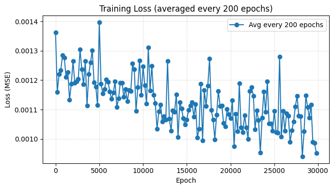

def train_epochs_on_the_fly(
model, opt, loss_fn, device,
epochs=2, save_path="edge_denoiser.pth", img_size=256
):
print("Training (on-the-fly, 1 sample per epoch)...")
model.train()
gstep = 0
loss_hist = []
psnr_hist = []
pbar = tqdm(range(1, epochs + 1), dynamic_ncols=True, desc="Epochs")
for ep in pbar:
noisy, clean, meta = generate_sample_tensor(size=img_size, device=device)
pred = model(noisy)
loss = loss_fn(pred, clean)
opt.zero_grad(set_to_none=True)
loss.backward()
torch.nn.utils.clip_grad_norm_(model.parameters(), 1.0)
opt.step()
gstep += 1
with torch.no_grad():
cur_psnr = psnr(pred[0], clean[0])
loss_hist.append(float(loss.item()))
psnr_hist.append(float(cur_psnr))
postfix = {
"loss": f"{loss.item():.4f}",
"psnr": f"{cur_psnr:.2f} dB",
"noise": f"{meta['type']}",
"sigma": f"{meta['sigma']:.2f}",
"gstep": gstep
}
pbar.set_postfix(postfix)
torch.save(model.state_dict(), save_path)
print(f"Saved → {save_path}")
return {"loss": loss_hist, "psnr": psnr_hist}
hist = train_epochs_on_the_fly(
model, opt, loss_fn, device,
epochs=30000, save_path="edge_denoiser.pth", img_size=256
)
chunk_size = 200
loss_avg = chunk_avg(hist["loss"], chunk_size)
psnr_avg = chunk_avg(hist["psnr"], chunk_size)
x = np.arange(len(loss_avg)) * chunk_size
plt.figure(figsize=(7, 4))
plt.plot(x, loss_avg, marker="o", label=f"Avg every {chunk_size} epochs")
plt.xlabel("Epoch")
plt.ylabel("Loss (MSE)")
plt.title("Training Loss (averaged every 200 epochs)")
plt.grid(True, linestyle=":", alpha=0.7)
plt.legend()
plt.tight_layout()
plt.show()
plt.figure(figsize=(7, 4))
plt.plot(x, psnr_avg, marker="o", color="orange", label=f"Avg every {chunk_size} epochs")
plt.xlabel("Epoch")
plt.ylabel("PSNR (dB)")
plt.title("Training PSNR (averaged every 200 epochs)")
plt.grid(True, linestyle=":", alpha=0.7)
plt.legend()
plt.tight_layout()
plt.show()Training (on-the-fly, 1 sample per epoch)...
Epochs: 100%|██████████| 30000/30000 [1:08:39<00:00, 7.28it/s, loss=0.0005, psnr=32.97 dB, noise=add, sigma=0.12, gstep=3e+4]
Saved → edge_denoiser.pth
